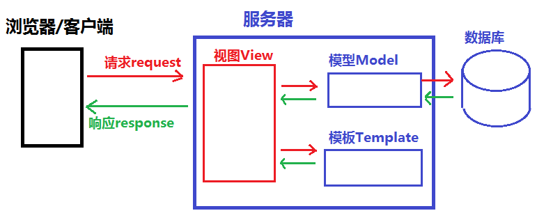

<!doctype html>
<html style='font-size:24px !important'>
<head>
<meta charset='UTF-8'><meta name='viewport' content='width=device-width initial-scale=1'>
<title>django教程day02</title><style type='text/css'>html {overflow-x: initial !important;}:root { --bg-color:#ffffff; --text-color:#333333; --select-text-bg-color:#B5D6FC; --select-text-font-color:auto; --monospace:"Lucida Console",Consolas,"Courier",monospace; }
html { font-size: 14px; background-color: var(--bg-color); color: var(--text-color); font-family: "Helvetica Neue", Helvetica, Arial, sans-serif; -webkit-font-smoothing: antialiased; }
body { margin: 0px; padding: 0px; height: auto; bottom: 0px; top: 0px; left: 0px; right: 0px; font-size: 1rem; line-height: 1.42857; overflow-x: hidden; background: inherit; tab-size: 4; }
iframe { margin: auto; }
a.url { word-break: break-all; }
a:active, a:hover { outline: 0px; }
.in-text-selection, ::selection { text-shadow: none; background: var(--select-text-bg-color); color: var(--select-text-font-color); }
#write { margin: 0px auto; height: auto; width: inherit; word-break: normal; overflow-wrap: break-word; position: relative; white-space: normal; overflow-x: visible; padding-top: 40px; }
#write.first-line-indent p { text-indent: 2em; }
#write.first-line-indent li p, #write.first-line-indent p * { text-indent: 0px; }
#write.first-line-indent li { margin-left: 2em; }
.for-image #write { padding-left: 8px; padding-right: 8px; }
body.typora-export { padding-left: 30px; padding-right: 30px; }
.typora-export .footnote-line, .typora-export li, .typora-export p { white-space: pre-wrap; }
@media screen and (max-width: 500px) {
  body.typora-export { padding-left: 0px; padding-right: 0px; }
  #write { padding-left: 20px; padding-right: 20px; }
  .CodeMirror-sizer { margin-left: 0px !important; }
  .CodeMirror-gutters { display: none !important; }
}
#write li > figure:last-child { margin-bottom: 0.5rem; }
#write ol, #write ul { position: relative; }
img { max-width: 100%; vertical-align: middle; }
button, input, select, textarea { color: inherit; font: inherit; }
input[type="checkbox"], input[type="radio"] { line-height: normal; padding: 0px; }
*, ::after, ::before { box-sizing: border-box; }
#write h1, #write h2, #write h3, #write h4, #write h5, #write h6, #write p, #write pre { width: inherit; }
#write h1, #write h2, #write h3, #write h4, #write h5, #write h6, #write p { position: relative; }
p { line-height: inherit; }
h1, h2, h3, h4, h5, h6 { break-after: avoid-page; break-inside: avoid; orphans: 2; }
p { orphans: 4; }
h1 { font-size: 2rem; }
h2 { font-size: 1.8rem; }
h3 { font-size: 1.6rem; }
h4 { font-size: 1.4rem; }
h5 { font-size: 1.2rem; }
h6 { font-size: 1rem; }
.md-math-block, .md-rawblock, h1, h2, h3, h4, h5, h6, p { margin-top: 1rem; margin-bottom: 1rem; }
.hidden { display: none; }
.md-blockmeta { color: rgb(204, 204, 204); font-weight: 700; font-style: italic; }
a { cursor: pointer; }
sup.md-footnote { padding: 2px 4px; background-color: rgba(238, 238, 238, 0.7); color: rgb(85, 85, 85); border-radius: 4px; cursor: pointer; }
sup.md-footnote a, sup.md-footnote a:hover { color: inherit; text-transform: inherit; text-decoration: inherit; }
#write input[type="checkbox"] { cursor: pointer; width: inherit; height: inherit; }
figure { overflow-x: auto; margin: 1.2em 0px; max-width: calc(100% + 16px); padding: 0px; }
figure > table { margin: 0px !important; }
tr { break-inside: avoid; break-after: auto; }
thead { display: table-header-group; }
table { border-collapse: collapse; border-spacing: 0px; width: 100%; overflow: auto; break-inside: auto; text-align: left; }
table.md-table td { min-width: 32px; }
.CodeMirror-gutters { border-right: 0px; background-color: inherit; }
.CodeMirror-linenumber { user-select: none; }
.CodeMirror { text-align: left; }
.CodeMirror-placeholder { opacity: 0.3; }
.CodeMirror pre { padding: 0px 4px; }
.CodeMirror-lines { padding: 0px; }
div.hr:focus { cursor: none; }
#write pre { white-space: pre-wrap; }
#write.fences-no-line-wrapping pre { white-space: pre; }
#write pre.ty-contain-cm { white-space: normal; }
.CodeMirror-gutters { margin-right: 4px; }
.md-fences { font-size: 0.9rem; display: block; break-inside: avoid; text-align: left; overflow: visible; white-space: pre; background: inherit; position: relative !important; }
.md-diagram-panel { width: 100%; margin-top: 10px; text-align: center; padding-top: 0px; padding-bottom: 8px; overflow-x: auto; }
#write .md-fences.mock-cm { white-space: pre-wrap; }
.md-fences.md-fences-with-lineno { padding-left: 0px; }
#write.fences-no-line-wrapping .md-fences.mock-cm { white-space: pre; overflow-x: auto; }
.md-fences.mock-cm.md-fences-with-lineno { padding-left: 8px; }
.CodeMirror-line, twitterwidget { break-inside: avoid; }
.footnotes { opacity: 0.8; font-size: 0.9rem; margin-top: 1em; margin-bottom: 1em; }
.footnotes + .footnotes { margin-top: 0px; }
.md-reset { margin: 0px; padding: 0px; border: 0px; outline: 0px; vertical-align: top; background: 0px 0px; text-decoration: none; text-shadow: none; float: none; position: static; width: auto; height: auto; white-space: nowrap; cursor: inherit; -webkit-tap-highlight-color: transparent; line-height: normal; font-weight: 400; text-align: left; box-sizing: content-box; direction: ltr; }
li div { padding-top: 0px; }
blockquote { margin: 1rem 0px; }
li .mathjax-block, li p { margin: 0.5rem 0px; }
li { margin: 0px; position: relative; }
blockquote > :last-child { margin-bottom: 0px; }
blockquote > :first-child, li > :first-child { margin-top: 0px; }
.footnotes-area { color: rgb(136, 136, 136); margin-top: 0.714rem; padding-bottom: 0.143rem; white-space: normal; }
#write .footnote-line { white-space: pre-wrap; }
@media print {
  body, html { border: 1px solid transparent; height: 99%; break-after: avoid; break-before: avoid; }
  #write { margin-top: 0px; padding-top: 0px; border-color: transparent !important; }
  .typora-export * { -webkit-print-color-adjust: exact; }
  html.blink-to-pdf { font-size: 13px; }
  .typora-export #write { padding-left: 32px; padding-right: 32px; padding-bottom: 0px; break-after: avoid; }
  .typora-export #write::after { height: 0px; }
}
.footnote-line { margin-top: 0.714em; font-size: 0.7em; }
a img, img a { cursor: pointer; }
pre.md-meta-block { font-size: 0.8rem; min-height: 0.8rem; white-space: pre-wrap; background: rgb(204, 204, 204); display: block; overflow-x: hidden; }
p > .md-image:only-child:not(.md-img-error) img, p > img:only-child { display: block; margin: auto; }
p > .md-image:only-child { display: inline-block; width: 100%; }
#write .MathJax_Display { margin: 0.8em 0px 0px; }
.md-math-block { width: 100%; }
.md-math-block:not(:empty)::after { display: none; }
[contenteditable="true"]:active, [contenteditable="true"]:focus { outline: 0px; box-shadow: none; }
.md-task-list-item { position: relative; list-style-type: none; }
.task-list-item.md-task-list-item { padding-left: 0px; }
.md-task-list-item > input { position: absolute; top: 0px; left: 0px; margin-left: -1.2em; margin-top: calc(1em - 10px); border: none; }
.math { font-size: 1rem; }
.md-toc { min-height: 3.58rem; position: relative; font-size: 0.9rem; border-radius: 10px; }
.md-toc-content { position: relative; margin-left: 0px; }
.md-toc-content::after, .md-toc::after { display: none; }
.md-toc-item { display: block; color: rgb(65, 131, 196); }
.md-toc-item a { text-decoration: none; }
.md-toc-inner:hover { text-decoration: underline; }
.md-toc-inner { display: inline-block; cursor: pointer; }
.md-toc-h1 .md-toc-inner { margin-left: 0px; font-weight: 700; }
.md-toc-h2 .md-toc-inner { margin-left: 2em; }
.md-toc-h3 .md-toc-inner { margin-left: 4em; }
.md-toc-h4 .md-toc-inner { margin-left: 6em; }
.md-toc-h5 .md-toc-inner { margin-left: 8em; }
.md-toc-h6 .md-toc-inner { margin-left: 10em; }
@media screen and (max-width: 48em) {
  .md-toc-h3 .md-toc-inner { margin-left: 3.5em; }
  .md-toc-h4 .md-toc-inner { margin-left: 5em; }
  .md-toc-h5 .md-toc-inner { margin-left: 6.5em; }
  .md-toc-h6 .md-toc-inner { margin-left: 8em; }
}
a.md-toc-inner { font-size: inherit; font-style: inherit; font-weight: inherit; line-height: inherit; }
.footnote-line a:not(.reversefootnote) { color: inherit; }
.md-attr { display: none; }
.md-fn-count::after { content: "."; }
code, pre, samp, tt { font-family: var(--monospace); }
kbd { margin: 0px 0.1em; padding: 0.1em 0.6em; font-size: 0.8em; color: rgb(36, 39, 41); background: rgb(255, 255, 255); border: 1px solid rgb(173, 179, 185); border-radius: 3px; box-shadow: rgba(12, 13, 14, 0.2) 0px 1px 0px, rgb(255, 255, 255) 0px 0px 0px 2px inset; white-space: nowrap; vertical-align: middle; }
.md-comment { color: rgb(162, 127, 3); opacity: 0.8; font-family: var(--monospace); }
code { text-align: left; vertical-align: initial; }
a.md-print-anchor { white-space: pre !important; border-width: initial !important; border-style: none !important; border-color: initial !important; display: inline-block !important; position: absolute !important; width: 1px !important; right: 0px !important; outline: 0px !important; background: 0px 0px !important; text-decoration: initial !important; text-shadow: initial !important; }
.md-inline-math .MathJax_SVG .noError { display: none !important; }
.html-for-mac .inline-math-svg .MathJax_SVG { vertical-align: 0.2px; }
.md-math-block .MathJax_SVG_Display { text-align: center; margin: 0px; position: relative; text-indent: 0px; max-width: none; max-height: none; min-height: 0px; min-width: 100%; width: auto; overflow-y: hidden; display: block !important; }
.MathJax_SVG_Display, .md-inline-math .MathJax_SVG_Display { width: auto; margin: inherit; display: inline-block !important; }
.MathJax_SVG .MJX-monospace { font-family: var(--monospace); }
.MathJax_SVG .MJX-sans-serif { font-family: sans-serif; }
.MathJax_SVG { display: inline; font-style: normal; font-weight: 400; line-height: normal; zoom: 90%; text-indent: 0px; text-align: left; text-transform: none; letter-spacing: normal; word-spacing: normal; overflow-wrap: normal; white-space: nowrap; float: none; direction: ltr; max-width: none; max-height: none; min-width: 0px; min-height: 0px; border: 0px; padding: 0px; margin: 0px; }
.MathJax_SVG * { transition: none 0s ease 0s; }
.MathJax_SVG_Display svg { vertical-align: middle !important; margin-bottom: 0px !important; margin-top: 0px !important; }
.os-windows.monocolor-emoji .md-emoji { font-family: "Segoe UI Symbol", sans-serif; }
.md-diagram-panel > svg { max-width: 100%; }
[lang="mermaid"] svg, [lang="flow"] svg { max-width: 100%; height: auto; }
[lang="mermaid"] .node text { font-size: 1rem; }
table tr th { border-bottom: 0px; }
video { max-width: 100%; display: block; margin: 0px auto; }
iframe { max-width: 100%; width: 100%; border: none; }
.highlight td, .highlight tr { border: 0px; }


.CodeMirror { height: auto; }
.CodeMirror.cm-s-inner { background: inherit; }
.CodeMirror-scroll { overflow: auto hidden; z-index: 3; }
.CodeMirror-gutter-filler, .CodeMirror-scrollbar-filler { background-color: rgb(255, 255, 255); }
.CodeMirror-gutters { border-right: 1px solid rgb(221, 221, 221); background: inherit; white-space: nowrap; }
.CodeMirror-linenumber { padding: 0px 3px 0px 5px; text-align: right; color: rgb(153, 153, 153); }
.cm-s-inner .cm-keyword { color: rgb(119, 0, 136); }
.cm-s-inner .cm-atom, .cm-s-inner.cm-atom { color: rgb(34, 17, 153); }
.cm-s-inner .cm-number { color: rgb(17, 102, 68); }
.cm-s-inner .cm-def { color: rgb(0, 0, 255); }
.cm-s-inner .cm-variable { color: rgb(0, 0, 0); }
.cm-s-inner .cm-variable-2 { color: rgb(0, 85, 170); }
.cm-s-inner .cm-variable-3 { color: rgb(0, 136, 85); }
.cm-s-inner .cm-string { color: rgb(170, 17, 17); }
.cm-s-inner .cm-property { color: rgb(0, 0, 0); }
.cm-s-inner .cm-operator { color: rgb(152, 26, 26); }
.cm-s-inner .cm-comment, .cm-s-inner.cm-comment { color: rgb(170, 85, 0); }
.cm-s-inner .cm-string-2 { color: rgb(255, 85, 0); }
.cm-s-inner .cm-meta { color: rgb(85, 85, 85); }
.cm-s-inner .cm-qualifier { color: rgb(85, 85, 85); }
.cm-s-inner .cm-builtin { color: rgb(51, 0, 170); }
.cm-s-inner .cm-bracket { color: rgb(153, 153, 119); }
.cm-s-inner .cm-tag { color: rgb(17, 119, 0); }
.cm-s-inner .cm-attribute { color: rgb(0, 0, 204); }
.cm-s-inner .cm-header, .cm-s-inner.cm-header { color: rgb(0, 0, 255); }
.cm-s-inner .cm-quote, .cm-s-inner.cm-quote { color: rgb(0, 153, 0); }
.cm-s-inner .cm-hr, .cm-s-inner.cm-hr { color: rgb(153, 153, 153); }
.cm-s-inner .cm-link, .cm-s-inner.cm-link { color: rgb(0, 0, 204); }
.cm-negative { color: rgb(221, 68, 68); }
.cm-positive { color: rgb(34, 153, 34); }
.cm-header, .cm-strong { font-weight: 700; }
.cm-del { text-decoration: line-through; }
.cm-em { font-style: italic; }
.cm-link { text-decoration: underline; }
.cm-error { color: red; }
.cm-invalidchar { color: red; }
.cm-constant { color: rgb(38, 139, 210); }
.cm-defined { color: rgb(181, 137, 0); }
div.CodeMirror span.CodeMirror-matchingbracket { color: rgb(0, 255, 0); }
div.CodeMirror span.CodeMirror-nonmatchingbracket { color: rgb(255, 34, 34); }
.cm-s-inner .CodeMirror-activeline-background { background: inherit; }
.CodeMirror { position: relative; overflow: hidden; }
.CodeMirror-scroll { height: 100%; outline: 0px; position: relative; box-sizing: content-box; background: inherit; }
.CodeMirror-sizer { position: relative; }
.CodeMirror-gutter-filler, .CodeMirror-hscrollbar, .CodeMirror-scrollbar-filler, .CodeMirror-vscrollbar { position: absolute; z-index: 6; display: none; }
.CodeMirror-vscrollbar { right: 0px; top: 0px; overflow: hidden; }
.CodeMirror-hscrollbar { bottom: 0px; left: 0px; overflow: hidden; }
.CodeMirror-scrollbar-filler { right: 0px; bottom: 0px; }
.CodeMirror-gutter-filler { left: 0px; bottom: 0px; }
.CodeMirror-gutters { position: absolute; left: 0px; top: 0px; padding-bottom: 30px; z-index: 3; }
.CodeMirror-gutter { white-space: normal; height: 100%; box-sizing: content-box; padding-bottom: 30px; margin-bottom: -32px; display: inline-block; }
.CodeMirror-gutter-wrapper { position: absolute; z-index: 4; background: 0px 0px !important; border: none !important; }
.CodeMirror-gutter-background { position: absolute; top: 0px; bottom: 0px; z-index: 4; }
.CodeMirror-gutter-elt { position: absolute; cursor: default; z-index: 4; }
.CodeMirror-lines { cursor: text; }
.CodeMirror pre { border-radius: 0px; border-width: 0px; background: 0px 0px; font-family: inherit; font-size: inherit; margin: 0px; white-space: pre; overflow-wrap: normal; color: inherit; z-index: 2; position: relative; overflow: visible; }
.CodeMirror-wrap pre { overflow-wrap: break-word; white-space: pre-wrap; word-break: normal; }
.CodeMirror-code pre { border-right: 30px solid transparent; width: fit-content; }
.CodeMirror-wrap .CodeMirror-code pre { border-right: none; width: auto; }
.CodeMirror-linebackground { position: absolute; left: 0px; right: 0px; top: 0px; bottom: 0px; z-index: 0; }
.CodeMirror-linewidget { position: relative; z-index: 2; overflow: auto; }
.CodeMirror-wrap .CodeMirror-scroll { overflow-x: hidden; }
.CodeMirror-measure { position: absolute; width: 100%; height: 0px; overflow: hidden; visibility: hidden; }
.CodeMirror-measure pre { position: static; }
.CodeMirror div.CodeMirror-cursor { position: absolute; visibility: hidden; border-right: none; width: 0px; }
.CodeMirror div.CodeMirror-cursor { visibility: hidden; }
.CodeMirror-focused div.CodeMirror-cursor { visibility: inherit; }
.cm-searching { background: rgba(255, 255, 0, 0.4); }
@media print {
  .CodeMirror div.CodeMirror-cursor { visibility: hidden; }
}


:root { --side-bar-bg-color: #fafafa; --control-text-color: #777; }
html { font-size: 16px; }
body { font-family: "Open Sans", "Clear Sans", "Helvetica Neue", Helvetica, Arial, sans-serif; color: rgb(51, 51, 51); line-height: 1.6; }
#write { max-width: 860px; margin: 0px auto; padding: 30px 30px 100px; }
#write > ul:first-child, #write > ol:first-child { margin-top: 30px; }
a { color: rgb(65, 131, 196); }
h1, h2, h3, h4, h5, h6 { position: relative; margin-top: 1rem; margin-bottom: 1rem; font-weight: bold; line-height: 1.4; cursor: text; }
h1:hover a.anchor, h2:hover a.anchor, h3:hover a.anchor, h4:hover a.anchor, h5:hover a.anchor, h6:hover a.anchor { text-decoration: none; }
h1 tt, h1 code { font-size: inherit; }
h2 tt, h2 code { font-size: inherit; }
h3 tt, h3 code { font-size: inherit; }
h4 tt, h4 code { font-size: inherit; }
h5 tt, h5 code { font-size: inherit; }
h6 tt, h6 code { font-size: inherit; }
h1 { padding-bottom: 0.3em; font-size: 2.25em; line-height: 1.2; border-bottom: 1px solid rgb(238, 238, 238); }
h2 { padding-bottom: 0.3em; font-size: 1.75em; line-height: 1.225; border-bottom: 1px solid rgb(238, 238, 238); }
h3 { font-size: 1.5em; line-height: 1.43; }
h4 { font-size: 1.25em; }
h5 { font-size: 1em; }
h6 { font-size: 1em; color: rgb(119, 119, 119); }
p, blockquote, ul, ol, dl, table { margin: 0.8em 0px; }
li > ol, li > ul { margin: 0px; }
hr { height: 2px; padding: 0px; margin: 16px 0px; background-color: rgb(231, 231, 231); border: 0px none; overflow: hidden; box-sizing: content-box; }
li p.first { display: inline-block; }
ul, ol { padding-left: 30px; }
ul:first-child, ol:first-child { margin-top: 0px; }
ul:last-child, ol:last-child { margin-bottom: 0px; }
blockquote { border-left: 4px solid rgb(223, 226, 229); padding: 0px 15px; color: rgb(119, 119, 119); }
blockquote blockquote { padding-right: 0px; }
table { padding: 0px; word-break: initial; }
table tr { border-top: 1px solid rgb(223, 226, 229); margin: 0px; padding: 0px; }
table tr:nth-child(2n), thead { background-color: rgb(248, 248, 248); }
table tr th { font-weight: bold; border-width: 1px 1px 0px; border-top-style: solid; border-right-style: solid; border-left-style: solid; border-top-color: rgb(223, 226, 229); border-right-color: rgb(223, 226, 229); border-left-color: rgb(223, 226, 229); border-image: initial; border-bottom-style: initial; border-bottom-color: initial; text-align: left; margin: 0px; padding: 6px 13px; }
table tr td { border: 1px solid rgb(223, 226, 229); text-align: left; margin: 0px; padding: 6px 13px; }
table tr th:first-child, table tr td:first-child { margin-top: 0px; }
table tr th:last-child, table tr td:last-child { margin-bottom: 0px; }
.CodeMirror-lines { padding-left: 4px; }
.code-tooltip { box-shadow: rgba(0, 28, 36, 0.3) 0px 1px 1px 0px; border-top: 1px solid rgb(238, 242, 242); }
.md-fences, code, tt { border: 1px solid rgb(231, 234, 237); background-color: rgb(248, 248, 248); border-radius: 3px; padding: 2px 4px 0px; font-size: 0.9em; }
code { background-color: rgb(243, 244, 244); padding: 0px 2px; }
.md-fences { margin-bottom: 15px; margin-top: 15px; padding-top: 8px; padding-bottom: 6px; }
.md-task-list-item > input { margin-left: -1.3em; }
@media print {
  html { font-size: 13px; }
  table, pre { break-inside: avoid; }
  pre { overflow-wrap: break-word; }
}
.md-fences { background-color: rgb(248, 248, 248); }
#write pre.md-meta-block { padding: 1rem; font-size: 85%; line-height: 1.45; background-color: rgb(247, 247, 247); border: 0px; border-radius: 3px; color: rgb(119, 119, 119); margin-top: 0px !important; }
.mathjax-block > .code-tooltip { bottom: 0.375rem; }
.md-mathjax-midline { background: rgb(250, 250, 250); }
#write > h3.md-focus::before { left: -1.5625rem; top: 0.375rem; }
#write > h4.md-focus::before { left: -1.5625rem; top: 0.285714rem; }
#write > h5.md-focus::before { left: -1.5625rem; top: 0.285714rem; }
#write > h6.md-focus::before { left: -1.5625rem; top: 0.285714rem; }
.md-image > .md-meta { border-radius: 3px; padding: 2px 0px 0px 4px; font-size: 0.9em; color: inherit; }
.md-tag { color: rgb(167, 167, 167); opacity: 1; }
.md-toc { margin-top: 20px; padding-bottom: 20px; }
.sidebar-tabs { border-bottom: none; }
#typora-quick-open { border: 1px solid rgb(221, 221, 221); background-color: rgb(248, 248, 248); }
#typora-quick-open-item { background-color: rgb(250, 250, 250); border-color: rgb(254, 254, 254) rgb(229, 229, 229) rgb(229, 229, 229) rgb(238, 238, 238); border-style: solid; border-width: 1px; }
.on-focus-mode blockquote { border-left-color: rgba(85, 85, 85, 0.12); }
header, .context-menu, .megamenu-content, footer { font-family: "Segoe UI", Arial, sans-serif; }
.file-node-content:hover .file-node-icon, .file-node-content:hover .file-node-open-state { visibility: visible; }
.mac-seamless-mode #typora-sidebar { background-color: var(--side-bar-bg-color); }
.md-lang { color: rgb(180, 101, 77); }
.html-for-mac .context-menu { --item-hover-bg-color: #E6F0FE; }
#md-notification .btn { border: 0px; }
.dropdown-menu .divider { border-color: rgb(229, 229, 229); }
.ty-preferences .window-content { background-color: rgb(250, 250, 250); }
.ty-preferences .nav-group-item.active { color: white; background: rgb(153, 153, 153); }


</style>
</head>
<body class='typora-export os-windows' >
<div  id='write'  class = 'is-node'><h1><a name="《django-web框架教学笔记》" class="md-header-anchor"></a><span>《Django Web框架教学笔记》</span></h1><h2><a name="目录" class="md-header-anchor"></a><span>目录</span></h2><div class='md-toc' mdtype='toc'><p class="md-toc-content"><span class="md-toc-item md-toc-h1" data-ref="n0"><a class="md-toc-inner" href="#《django-web框架教学笔记》">《Django Web框架教学笔记》</a></span><span class="md-toc-item md-toc-h2" data-ref="n3"><a class="md-toc-inner" href="#目录">目录</a></span><span class="md-toc-item md-toc-h2" data-ref="n5"><a class="md-toc-inner" href="#django的框架设计模式">Django的框架设计模式</a></span><span class="md-toc-item md-toc-h2" data-ref="n44"><a class="md-toc-inner" href="#模板-templates">模板 Templates</a></span><span class="md-toc-item md-toc-h3" data-ref="n84"><a class="md-toc-inner" href="#django-模板语言">Django 模板语言</a></span><span class="md-toc-item md-toc-h4" data-ref="n85"><a class="md-toc-inner" href="#模板的传参">模板的传参</a></span><span class="md-toc-item md-toc-h4" data-ref="n96"><a class="md-toc-inner" href="#模板的变量">模板的变量</a></span><span class="md-toc-item md-toc-h4" data-ref="n119"><a class="md-toc-inner" href="#xss攻击">XSS攻击</a></span><span class="md-toc-item md-toc-h5" data-ref="n124"><a class="md-toc-inner" href="#反射型xss">反射型xss</a></span><span class="md-toc-item md-toc-h5" data-ref="n127"><a class="md-toc-inner" href="#存储型xss">存储型xss</a></span><span class="md-toc-item md-toc-h5" data-ref="n130"><a class="md-toc-inner" href="#dom-xss">DOM xss</a></span><span class="md-toc-item md-toc-h4" data-ref="n134"><a class="md-toc-inner" href="#模板的标签">模板的标签</a></span><span class="md-toc-item md-toc-h4" data-ref="n199"><a class="md-toc-inner" href="#过滤器">过滤器</a></span><span class="md-toc-item md-toc-h3" data-ref="n243"><a class="md-toc-inner" href="#模板的继承">模板的继承</a></span><span class="md-toc-item md-toc-h3" data-ref="n293"><a class="md-toc-inner" href="#url-反向解析">url 反向解析</a></span></p></div><h2><a name="django的框架设计模式" class="md-header-anchor"></a><span>Django的框架设计模式</span></h2><ul><li><p><span>MVC 设计模式</span></p><ul><li><p><span>MVC 代表 Model-View-Controller（模型-视图-控制器） 模式。</span></p></li><li><p><span>作用: 降低模块间的耦合度(解耦)</span></p></li><li><p><span>MVC</span></p><ul><li><span>M 模型层(Model), 主要用于对数据库层的封装</span></li><li><span>V 视图层(View), 用于向用户展示结果</span></li><li><span>C 控制(Controller ，用于处理请求、获取数据、返回结果(重要)</span></li></ul></li><li><p><span>MVC模式如图:</span>
</p></li></ul></li><li><p><span>MTV 模式</span>
<span>MTV 代表 Model-Template-View（模型-模板-视图） 模式。这种模式用于应用程序的分层开发</span></p><ul><li><p><span>作用: </span></p><ul><li><span>降低模块间的耦合度(解耦)</span></li></ul></li><li><p><span>MTV </span></p><ul><li><span>M -- 模型层(Model)  负责与数据库交互</span></li><li><span>T -- 模板层(Template)  负责呈现内容到浏览器</span></li><li><span>V -- 视图层(View)  是核心，负责接收请求、获取数据、返回结果</span></li></ul></li><li><p><span>MTV模式如图:</span>
</p></li></ul></li></ul><h2><a name="模板-templates" class="md-header-anchor"></a><span>模板 Templates</span></h2><ul><li><p><span>什么是模板</span></p><ol start='' ><li><span>模板是可以根据字典数据动态变化的html网页</span></li><li><span>模板可以根据视图中传递的字典数据动态生成相应的HTML网页。</span></li></ol></li><li><p><span>模板的配置</span></p><ul><li><p><span>创建模板文件夹</span><code>&lt;项目名&gt;/templates</code></p></li><li><p><span>在 settings.py 中 TEMPLATES 配置项</span></p><ol start='' ><li><span>BACKEND : 指定模板的引擎</span></li><li><span>DIRS : 模板的搜索目录(可以是一个或多个)</span></li><li><span>APP_DIRS : 是否要在应用中的 </span><code>templates</code><span> 文件夹中搜索模板文件</span></li><li><span>OPTIONS : 有关模板的选项</span></li></ol></li></ul></li><li><p><span>默认的模块文件夹</span><code>templates</code></p></li><li><p><span>修改settings.py文件，设置TEMPLATES的DIRS值为</span><code>&#39;DIRS&#39;: [os.path.join(BASE_DIR, &#39;templates&#39;)],</code></p></li></ul><pre spellcheck="false" class="md-fences md-end-block ty-contain-cm modeLoaded" lang="python"><div class="CodeMirror cm-s-inner CodeMirror-wrap" lang="python"><div style="overflow: hidden; position: relative; width: 3px; height: 0px; top: 0px; left: 8px;"><textarea autocorrect="off" autocapitalize="off" spellcheck="false" tabindex="0" style="position: absolute; bottom: -1em; padding: 0px; width: 1000px; height: 1em; outline: none;"></textarea></div><div class="CodeMirror-scrollbar-filler" cm-not-content="true"></div><div class="CodeMirror-gutter-filler" cm-not-content="true"></div><div class="CodeMirror-scroll" tabindex="-1"><div class="CodeMirror-sizer" style="margin-left: 0px; margin-bottom: 0px; border-right-width: 0px; padding-right: 0px; padding-bottom: 0px;"><div style="position: relative; top: 0px;"><div class="CodeMirror-lines" role="presentation"><div role="presentation" style="position: relative; outline: none;"><div class="CodeMirror-measure"></div><div class="CodeMirror-measure"></div><div style="position: relative; z-index: 1;"></div><div class="CodeMirror-code" role="presentation" style=""><div class="CodeMirror-activeline" style="position: relative;"><div class="CodeMirror-activeline-background CodeMirror-linebackground"></div><div class="CodeMirror-gutter-background CodeMirror-activeline-gutter" style="left: 0px; width: 0px;"></div><pre class=" CodeMirror-line " role="presentation"><span role="presentation" style="padding-right: 0.1px;"><span class="cm-comment"># file: settings.py</span></span></pre></div><pre class=" CodeMirror-line " role="presentation"><span role="presentation" style="padding-right: 0.1px;"><span class="cm-variable">TEMPLATES</span> = [</span></pre><pre class=" CodeMirror-line " role="presentation"><span role="presentation" style="padding-right: 0.1px;"> &nbsp;  {</span></pre><pre class=" CodeMirror-line " role="presentation"><span role="presentation" style="padding-right: 0.1px;"> &nbsp; &nbsp; &nbsp; &nbsp;<span class="cm-string">'BACKEND'</span>: <span class="cm-string">'django.template.backends.django.DjangoTemplates'</span>,</span></pre><pre class=" CodeMirror-line " role="presentation"><span role="presentation" style="padding-right: 0.1px;"> &nbsp; &nbsp; &nbsp; &nbsp;<span class="cm-comment"># 'DIRS': [],</span></span></pre><pre class=" CodeMirror-line " role="presentation"><span role="presentation" style="padding-right: 0.1px;"> &nbsp; &nbsp; &nbsp; &nbsp;<span class="cm-string">'DIRS'</span>: [<span class="cm-variable">os</span>.<span class="cm-property">path</span>.<span class="cm-property">join</span>(<span class="cm-variable">BASE_DIR</span>, <span class="cm-string">'templates'</span>)], &nbsp;<span class="cm-comment"># 添加模板路径</span></span></pre><pre class=" CodeMirror-line " role="presentation"><span role="presentation" style="padding-right: 0.1px;"> &nbsp; &nbsp; &nbsp; &nbsp;<span class="cm-string">'APP_DIRS'</span>: <span class="cm-keyword">True</span>, &nbsp;<span class="cm-comment"># 是否索引各app里的templates目录</span></span></pre><pre class=" CodeMirror-line " role="presentation"><span role="presentation" style="padding-right: 0.1px;"> &nbsp; &nbsp; &nbsp;  ...</span></pre><pre class=" CodeMirror-line " role="presentation"><span role="presentation" style="padding-right: 0.1px;"> &nbsp;  },</span></pre><pre class=" CodeMirror-line " role="presentation"><span role="presentation" style="padding-right: 0.1px;">]</span></pre></div></div></div></div></div><div style="position: absolute; height: 0px; width: 1px; border-bottom: 0px solid transparent; top: 408px;"></div><div class="CodeMirror-gutters" style="display: none; height: 408px;"></div></div></div></pre><ol start='3' ><li><p><span>模板的加载方式</span></p><ol start='' ><li><p><span>通过 loader 获取模板,通过HttpResponse进行响应</span></p><pre spellcheck="false" class="md-fences md-end-block ty-contain-cm modeLoaded" lang="python"><div class="CodeMirror cm-s-inner CodeMirror-wrap" lang="python"><div style="overflow: hidden; position: relative; width: 3px; height: 0px; top: 0px; left: 8px;"><textarea autocorrect="off" autocapitalize="off" spellcheck="false" tabindex="0" style="position: absolute; bottom: -1em; padding: 0px; width: 1000px; height: 1em; outline: none;"></textarea></div><div class="CodeMirror-scrollbar-filler" cm-not-content="true"></div><div class="CodeMirror-gutter-filler" cm-not-content="true"></div><div class="CodeMirror-scroll" tabindex="-1"><div class="CodeMirror-sizer" style="margin-left: 0px; margin-bottom: 0px; border-right-width: 0px; padding-right: 0px; padding-bottom: 0px;"><div style="position: relative; top: 0px;"><div class="CodeMirror-lines" role="presentation"><div role="presentation" style="position: relative; outline: none;"><div class="CodeMirror-measure"><pre><span>xxxxxxxxxx</span></pre></div><div class="CodeMirror-measure"></div><div style="position: relative; z-index: 1;"></div><div class="CodeMirror-code" role="presentation" style=""><div class="CodeMirror-activeline" style="position: relative;"><div class="CodeMirror-activeline-background CodeMirror-linebackground"></div><div class="CodeMirror-gutter-background CodeMirror-activeline-gutter" style="left: 0px; width: 0px;"></div><pre class=" CodeMirror-line " role="presentation"><span role="presentation" style="padding-right: 0.1px;"><span class="cm-keyword">from</span> <span class="cm-variable">django</span>.<span class="cm-property">template</span> <span class="cm-keyword">import</span> <span class="cm-variable">loader</span></span></pre></div><pre class=" CodeMirror-line " role="presentation"><span role="presentation" style="padding-right: 0.1px;"><span class="cm-comment"># 1.通过loader加载模板</span></span></pre><pre class=" CodeMirror-line " role="presentation"><span role="presentation" style="padding-right: 0.1px;"><span class="cm-variable">t</span> = <span class="cm-variable">loader</span>.<span class="cm-property">get_template</span>(<span class="cm-string">"模板文件名"</span>)</span></pre><pre class=" CodeMirror-line " role="presentation"><span role="presentation" style="padding-right: 0.1px;"><span class="cm-comment"># 2.将t转换成 HTML 字符串</span></span></pre><pre class=" CodeMirror-line " role="presentation"><span role="presentation" style="padding-right: 0.1px;"><span class="cm-variable">html</span> = <span class="cm-variable">t</span>.<span class="cm-property">render</span>(<span class="cm-variable">字典数据</span>)</span></pre><pre class=" CodeMirror-line " role="presentation"><span role="presentation" style="padding-right: 0.1px;"><span class="cm-comment"># 3.用响应对象将转换的字符串内容返回给浏览器</span></span></pre><pre class=" CodeMirror-line " role="presentation"><span role="presentation" style="padding-right: 0.1px;"><span class="cm-keyword">return</span> <span class="cm-variable">HttpResponse</span>(<span class="cm-variable">html</span>)</span></pre></div></div></div></div></div><div style="position: absolute; height: 0px; width: 1px; border-bottom: 0px solid transparent; top: 238px;"></div><div class="CodeMirror-gutters" style="display: none; height: 238px;"></div></div></div></pre></li><li><p><span>使用 render() 直接加载并响应模板</span></p><pre spellcheck="false" class="md-fences md-end-block ty-contain-cm modeLoaded" lang="python"><div class="CodeMirror cm-s-inner CodeMirror-wrap" lang="python"><div style="overflow: hidden; position: relative; width: 3px; height: 0px; top: 0px; left: 8px;"><textarea autocorrect="off" autocapitalize="off" spellcheck="false" tabindex="0" style="position: absolute; bottom: -1em; padding: 0px; width: 1000px; height: 1em; outline: none;"></textarea></div><div class="CodeMirror-scrollbar-filler" cm-not-content="true"></div><div class="CodeMirror-gutter-filler" cm-not-content="true"></div><div class="CodeMirror-scroll" tabindex="-1"><div class="CodeMirror-sizer" style="margin-left: 0px; margin-bottom: 0px; border-right-width: 0px; padding-right: 0px; padding-bottom: 0px;"><div style="position: relative; top: 0px;"><div class="CodeMirror-lines" role="presentation"><div role="presentation" style="position: relative; outline: none;"><div class="CodeMirror-measure"><pre><span>xxxxxxxxxx</span></pre></div><div class="CodeMirror-measure"></div><div style="position: relative; z-index: 1;"></div><div class="CodeMirror-code" role="presentation"><div class="CodeMirror-activeline" style="position: relative;"><div class="CodeMirror-activeline-background CodeMirror-linebackground"></div><div class="CodeMirror-gutter-background CodeMirror-activeline-gutter" style="left: 0px; width: 0px;"></div><pre class=" CodeMirror-line " role="presentation"><span role="presentation" style="padding-right: 0.1px;"><span class="cm-keyword">from</span> <span class="cm-variable">django</span>.<span class="cm-property">shortcuts</span> <span class="cm-keyword">import</span> <span class="cm-variable">render</span></span></pre></div><pre class=" CodeMirror-line " role="presentation"><span role="presentation" style="padding-right: 0.1px;"><span class="cm-keyword">return</span> <span class="cm-variable">render</span>(<span class="cm-variable">request</span>,<span class="cm-string">'模板文件名'</span>, <span class="cm-variable">字典数据</span>)</span></pre></div></div></div></div></div><div style="position: absolute; height: 0px; width: 1px; border-bottom: 0px solid transparent; top: 68px;"></div><div class="CodeMirror-gutters" style="display: none; height: 68px;"></div></div></div></pre></li></ol></li></ol><h3><a name="django-模板语言" class="md-header-anchor"></a><span>Django 模板语言</span></h3><h4><a name="模板的传参" class="md-header-anchor"></a><span>模板的传参</span></h4><ul><li><span>模板传参是指把数据形成字典，传参给模板，为模板渲染提供数据</span></li></ul><ol start='' ><li><p><span>使用 loader 加载模板</span></p><pre spellcheck="false" class="md-fences md-end-block ty-contain-cm modeLoaded" lang="python"><div class="CodeMirror cm-s-inner CodeMirror-wrap" lang="python"><div style="overflow: hidden; position: relative; width: 3px; height: 0px; top: 0px; left: 8px;"><textarea autocorrect="off" autocapitalize="off" spellcheck="false" tabindex="0" style="position: absolute; bottom: -1em; padding: 0px; width: 1000px; height: 1em; outline: none;"></textarea></div><div class="CodeMirror-scrollbar-filler" cm-not-content="true"></div><div class="CodeMirror-gutter-filler" cm-not-content="true"></div><div class="CodeMirror-scroll" tabindex="-1"><div class="CodeMirror-sizer" style="margin-left: 0px; margin-bottom: 0px; border-right-width: 0px; padding-right: 0px; padding-bottom: 0px;"><div style="position: relative; top: 0px;"><div class="CodeMirror-lines" role="presentation"><div role="presentation" style="position: relative; outline: none;"><div class="CodeMirror-measure"><pre><span>xxxxxxxxxx</span></pre></div><div class="CodeMirror-measure"></div><div style="position: relative; z-index: 1;"></div><div class="CodeMirror-code" role="presentation"><div class="CodeMirror-activeline" style="position: relative;"><div class="CodeMirror-activeline-background CodeMirror-linebackground"></div><div class="CodeMirror-gutter-background CodeMirror-activeline-gutter" style="left: 0px; width: 0px;"></div><pre class=" CodeMirror-line " role="presentation"><span role="presentation" style="padding-right: 0.1px;"><span class="cm-variable">t</span> = <span class="cm-variable">loader</span>.<span class="cm-property">get_template</span>(<span class="cm-string">'xxx.html'</span>)</span></pre></div><pre class=" CodeMirror-line " role="presentation"><span role="presentation" style="padding-right: 0.1px;"><span class="cm-variable">html</span> = <span class="cm-variable">t</span>.<span class="cm-property">render</span>(<span class="cm-variable">字典数据</span>)</span></pre><pre class=" CodeMirror-line " role="presentation"><span role="presentation" style="padding-right: 0.1px;"><span class="cm-keyword">return</span> <span class="cm-variable">HttpResponse</span>(<span class="cm-variable">html</span>)</span></pre></div></div></div></div></div><div style="position: absolute; height: 0px; width: 1px; border-bottom: 0px solid transparent; top: 102px;"></div><div class="CodeMirror-gutters" style="display: none; height: 102px;"></div></div></div></pre></li><li><p><span>使用render加载模板</span></p><pre spellcheck="false" class="md-fences md-end-block ty-contain-cm modeLoaded" lang="python"><div class="CodeMirror cm-s-inner CodeMirror-wrap" lang="python"><div style="overflow: hidden; position: relative; width: 3px; height: 0px; top: 0px; left: 8px;"><textarea autocorrect="off" autocapitalize="off" spellcheck="false" tabindex="0" style="position: absolute; bottom: -1em; padding: 0px; width: 1000px; height: 1em; outline: none;"></textarea></div><div class="CodeMirror-scrollbar-filler" cm-not-content="true"></div><div class="CodeMirror-gutter-filler" cm-not-content="true"></div><div class="CodeMirror-scroll" tabindex="-1"><div class="CodeMirror-sizer" style="margin-left: 0px; margin-bottom: 0px; border-right-width: 0px; padding-right: 0px; padding-bottom: 0px;"><div style="position: relative; top: 0px;"><div class="CodeMirror-lines" role="presentation"><div role="presentation" style="position: relative; outline: none;"><div class="CodeMirror-measure"><pre><span>xxxxxxxxxx</span></pre></div><div class="CodeMirror-measure"></div><div style="position: relative; z-index: 1;"></div><div class="CodeMirror-code" role="presentation"><div class="CodeMirror-activeline" style="position: relative;"><div class="CodeMirror-activeline-background CodeMirror-linebackground"></div><div class="CodeMirror-gutter-background CodeMirror-activeline-gutter" style="left: 0px; width: 0px;"></div><pre class=" CodeMirror-line " role="presentation"><span role="presentation" style="padding-right: 0.1px;"><span class="cm-keyword">return</span> <span class="cm-variable">render</span>(<span class="cm-variable">request</span>,<span class="cm-string">'xxx.html'</span>,<span class="cm-variable">字典数据</span>)</span></pre></div></div></div></div></div></div><div style="position: absolute; height: 0px; width: 1px; border-bottom: 0px solid transparent; top: 34px;"></div><div class="CodeMirror-gutters" style="display: none; height: 34px;"></div></div></div></pre></li></ol><h4><a name="模板的变量" class="md-header-anchor"></a><span>模板的变量</span></h4><ol start='' ><li><p><span>在模板中使用变量语法</span></p><ul><li><p><code>{{ 变量名 }}</code></p></li><li><p><code>{{ 变量名.index }}</code></p></li><li><p><code>{{ 变量名.key}}</code></p></li><li><p><code>{{ 对象.方法 }}</code></p></li><li><p><code>{{ 函数名 }}</code></p><p>&nbsp;</p></li></ul></li></ol><p><span>2.视图函数中必须将变量封装到字典中才允许传递到模板上</span></p><pre spellcheck="false" class="md-fences md-end-block ty-contain-cm modeLoaded" lang="python"><div class="CodeMirror cm-s-inner CodeMirror-wrap" lang="python"><div style="overflow: hidden; position: relative; width: 3px; height: 0px; top: 0px; left: 8px;"><textarea autocorrect="off" autocapitalize="off" spellcheck="false" tabindex="0" style="position: absolute; bottom: -1em; padding: 0px; width: 1000px; height: 1em; outline: none;"></textarea></div><div class="CodeMirror-scrollbar-filler" cm-not-content="true"></div><div class="CodeMirror-gutter-filler" cm-not-content="true"></div><div class="CodeMirror-scroll" tabindex="-1"><div class="CodeMirror-sizer" style="margin-left: 0px; margin-bottom: 0px; border-right-width: 0px; padding-right: 0px; padding-bottom: 0px;"><div style="position: relative; top: 0px;"><div class="CodeMirror-lines" role="presentation"><div role="presentation" style="position: relative; outline: none;"><div class="CodeMirror-measure"><pre><span>xxxxxxxxxx</span></pre></div><div class="CodeMirror-measure"></div><div style="position: relative; z-index: 1;"></div><div class="CodeMirror-code" role="presentation" style=""><div class="CodeMirror-activeline" style="position: relative;"><div class="CodeMirror-activeline-background CodeMirror-linebackground"></div><div class="CodeMirror-gutter-background CodeMirror-activeline-gutter" style="left: 0px; width: 0px;"></div><pre class=" CodeMirror-line " role="presentation"><span role="presentation" style="padding-right: 0.1px;"><span class="cm-keyword">def</span> <span class="cm-def">xxx_view</span>(<span class="cm-variable">request</span>)</span></pre></div><pre class=" CodeMirror-line " role="presentation"><span role="presentation" style="padding-right: 0.1px;"> &nbsp; &nbsp;<span class="cm-variable">dic</span> = {</span></pre><pre class=" CodeMirror-line " role="presentation"><span role="presentation" style="padding-right: 0.1px;"> &nbsp; &nbsp; &nbsp; &nbsp;<span class="cm-string">"变量1"</span>:<span class="cm-string">"值1"</span>,</span></pre><pre class=" CodeMirror-line " role="presentation"><span role="presentation" style="padding-right: 0.1px;"> &nbsp; &nbsp; &nbsp; &nbsp;<span class="cm-string">"变量2"</span>:<span class="cm-string">"值2"</span>,</span></pre><pre class=" CodeMirror-line " role="presentation"><span role="presentation" style="padding-right: 0.1px;"> &nbsp;  }</span></pre><pre class=" CodeMirror-line " role="presentation"><span role="presentation" style="padding-right: 0.1px;"> &nbsp; &nbsp;<span class="cm-keyword">return</span> <span class="cm-variable">render</span>(<span class="cm-variable">request</span>, <span class="cm-string">'xxx.html'</span>, <span class="cm-variable">dic</span>)</span></pre></div></div></div></div></div><div style="position: absolute; height: 0px; width: 1px; border-bottom: 0px solid transparent; top: 204px;"></div><div class="CodeMirror-gutters" style="display: none; height: 204px;"></div></div></div></pre><ol start='3' ><li><span>如果变量过多，可以使用 locals() 将局部变量自动生成字典</span></li></ol><pre spellcheck="false" class="md-fences md-end-block ty-contain-cm modeLoaded" lang="python"><div class="CodeMirror cm-s-inner CodeMirror-wrap" lang="python"><div style="overflow: hidden; position: relative; width: 3px; height: 0px; top: 0px; left: 8px;"><textarea autocorrect="off" autocapitalize="off" spellcheck="false" tabindex="0" style="position: absolute; bottom: -1em; padding: 0px; width: 1000px; height: 1em; outline: none;"></textarea></div><div class="CodeMirror-scrollbar-filler" cm-not-content="true"></div><div class="CodeMirror-gutter-filler" cm-not-content="true"></div><div class="CodeMirror-scroll" tabindex="-1"><div class="CodeMirror-sizer" style="margin-left: 0px; margin-bottom: 0px; border-right-width: 0px; padding-right: 0px; padding-bottom: 0px;"><div style="position: relative; top: 0px;"><div class="CodeMirror-lines" role="presentation"><div role="presentation" style="position: relative; outline: none;"><div class="CodeMirror-measure"><pre><span>xxxxxxxxxx</span></pre></div><div class="CodeMirror-measure"></div><div style="position: relative; z-index: 1;"></div><div class="CodeMirror-code" role="presentation" style=""><div class="CodeMirror-activeline" style="position: relative;"><div class="CodeMirror-activeline-background CodeMirror-linebackground"></div><div class="CodeMirror-gutter-background CodeMirror-activeline-gutter" style="left: 0px; width: 0px;"></div><pre class=" CodeMirror-line " role="presentation"><span role="presentation" style="padding-right: 0.1px;"><span class="cm-keyword">def</span> <span class="cm-def">xxx_view</span>(<span class="cm-variable">request</span>)</span></pre></div><pre class=" CodeMirror-line " role="presentation"><span role="presentation" style="padding-right: 0.1px;"><span class="cm-tab" role="presentation" cm-text="	">    </span><span class="cm-variable">变量1</span> = <span class="cm-variable">值1</span></span></pre><pre class=" CodeMirror-line " role="presentation"><span role="presentation" style="padding-right: 0.1px;"> &nbsp; &nbsp;<span class="cm-variable">变量2</span> = <span class="cm-variable">值2</span></span></pre><pre class=" CodeMirror-line " role="presentation"><span role="presentation" style="padding-right: 0.1px;"> &nbsp;  ...</span></pre><pre class=" CodeMirror-line " role="presentation"><span role="presentation" style="padding-right: 0.1px;"> &nbsp; &nbsp;<span class="cm-property">return</span> <span class="cm-variable">render</span>(<span class="cm-variable">request</span>, <span class="cm-string">'xxx.html'</span>, <span class="cm-builtin">locals</span>())</span></pre></div></div></div></div></div><div style="position: absolute; height: 0px; width: 1px; border-bottom: 0px solid transparent; top: 170px;"></div><div class="CodeMirror-gutters" style="display: none; height: 170px;"></div></div></div></pre><p>&nbsp;</p><h4><a name="xss攻击" class="md-header-anchor"></a><span>XSS攻击</span></h4><p><span>定义：XSS全称是Cross Site Scripting即跨站脚本</span></p><p><span>原理：将恶意HTML/JavaScript代码注入到受害用户浏览的网页上，从而达到攻击目的</span></p><p><span>危害：盗取用户信息，破坏网站正常运行等</span></p><p><span>分类：</span></p><h5><a name="反射型xss" class="md-header-anchor"></a><span>反射型xss</span></h5><p><span>    定义：发出请求时，XSS代码出现在URL中，作为输入提交到服务器端，服务器端解析后响应，XSS代码随响应内容一起传回给浏览器，最后浏览器解析执行XSS代码。这个过程像一次反射，故叫反射型XSS</span></p><pre spellcheck="false" class="md-fences md-end-block ty-contain-cm modeLoaded" lang="shell"><div class="CodeMirror cm-s-inner CodeMirror-wrap" lang="shell"><div style="overflow: hidden; position: relative; width: 3px; height: 0px; top: 0px; left: 8px;"><textarea autocorrect="off" autocapitalize="off" spellcheck="false" tabindex="0" style="position: absolute; bottom: -1em; padding: 0px; width: 1000px; height: 1em; outline: none;"></textarea></div><div class="CodeMirror-scrollbar-filler" cm-not-content="true"></div><div class="CodeMirror-gutter-filler" cm-not-content="true"></div><div class="CodeMirror-scroll" tabindex="-1"><div class="CodeMirror-sizer" style="margin-left: 0px; margin-bottom: 0px; border-right-width: 0px; padding-right: 0px; padding-bottom: 0px;"><div style="position: relative; top: 0px;"><div class="CodeMirror-lines" role="presentation"><div role="presentation" style="position: relative; outline: none;"><div class="CodeMirror-measure"><pre><span>xxxxxxxxxx</span></pre></div><div class="CodeMirror-measure"></div><div style="position: relative; z-index: 1;"></div><div class="CodeMirror-code" role="presentation"><div class="CodeMirror-activeline" style="position: relative;"><div class="CodeMirror-activeline-background CodeMirror-linebackground"></div><div class="CodeMirror-gutter-background CodeMirror-activeline-gutter" style="left: 0px; width: 0px;"></div><pre class=" CodeMirror-line " role="presentation"><span role="presentation" style="padding-right: 0.1px;">样例：</span></pre></div><pre class=" CodeMirror-line " role="presentation"><span role="presentation" style="padding-right: 0.1px;">以查询字符串形式提交 xss代码</span></pre><pre class=" CodeMirror-line " role="presentation"><span role="presentation" style="padding-right: 0.1px;">http://127.0.0.1:8000/test_html<span class="cm-def">?t</span><span class="cm-operator">=</span>&lt;script&gt;alert(11)&lt;/script&gt;</span></pre><pre class=" CodeMirror-line " role="presentation"><span role="presentation" style="padding-right: 0.1px;">后端接到查询字符串的值后，显示在页面中</span></pre></div></div></div></div></div><div style="position: absolute; height: 0px; width: 1px; border-bottom: 0px solid transparent; top: 170px;"></div><div class="CodeMirror-gutters" style="display: none; height: 170px;"></div></div></div></pre><h5><a name="存储型xss" class="md-header-anchor"></a><span>存储型xss</span></h5><p><span>	</span><span>定义：提交的XSS代码会存储在服务器端（数据库，内存，文件系统等），其他用户请求目标页面时即被攻击</span></p><pre spellcheck="false" class="md-fences md-end-block ty-contain-cm modeLoaded" lang="shell"><div class="CodeMirror cm-s-inner CodeMirror-wrap" lang="shell"><div style="overflow: hidden; position: relative; width: 3px; height: 0px; top: 0px; left: 8px;"><textarea autocorrect="off" autocapitalize="off" spellcheck="false" tabindex="0" style="position: absolute; bottom: -1em; padding: 0px; width: 1000px; height: 1em; outline: none;"></textarea></div><div class="CodeMirror-scrollbar-filler" cm-not-content="true"></div><div class="CodeMirror-gutter-filler" cm-not-content="true"></div><div class="CodeMirror-scroll" tabindex="-1"><div class="CodeMirror-sizer" style="margin-left: 0px; margin-bottom: 0px; border-right-width: 0px; padding-right: 0px; padding-bottom: 0px;"><div style="position: relative; top: 0px;"><div class="CodeMirror-lines" role="presentation"><div role="presentation" style="position: relative; outline: none;"><div class="CodeMirror-measure"><pre><span>xxxxxxxxxx</span></pre></div><div class="CodeMirror-measure"></div><div style="position: relative; z-index: 1;"></div><div class="CodeMirror-code" role="presentation"><div class="CodeMirror-activeline" style="position: relative;"><div class="CodeMirror-activeline-background CodeMirror-linebackground"></div><div class="CodeMirror-gutter-background CodeMirror-activeline-gutter" style="left: 0px; width: 0px;"></div><pre class=" CodeMirror-line " role="presentation"><span role="presentation" style="padding-right: 0.1px;">样例：</span></pre></div><pre class=" CodeMirror-line " role="presentation"><span role="presentation" style="padding-right: 0.1px;"> &nbsp;  博客发表文章时，提交XSS代码，服务器存储代码后，其他用户访问该文章时，被XSS攻击</span></pre></div></div></div></div></div><div style="position: absolute; height: 0px; width: 1px; border-bottom: 0px solid transparent; top: 102px;"></div><div class="CodeMirror-gutters" style="display: none; height: 102px;"></div></div></div></pre><h5><a name="dom-xss" class="md-header-anchor"></a><span>DOM xss</span></h5><p><span>	</span><span>定义：DOM XSS的代码无需跟服务器交互，在前端直接触发攻击</span></p><pre spellcheck="false" class="md-fences md-end-block ty-contain-cm modeLoaded" lang="js"><div class="CodeMirror cm-s-inner CodeMirror-wrap" lang="js"><div style="overflow: hidden; position: relative; width: 3px; height: 0px; top: 0px; left: 8px;"><textarea autocorrect="off" autocapitalize="off" spellcheck="false" tabindex="0" style="position: absolute; bottom: -1em; padding: 0px; width: 1000px; height: 1em; outline: none;"></textarea></div><div class="CodeMirror-scrollbar-filler" cm-not-content="true"></div><div class="CodeMirror-gutter-filler" cm-not-content="true"></div><div class="CodeMirror-scroll" tabindex="-1"><div class="CodeMirror-sizer" style="margin-left: 0px; margin-bottom: 0px; border-right-width: 0px; padding-right: 0px; padding-bottom: 0px;"><div style="position: relative; top: 0px;"><div class="CodeMirror-lines" role="presentation"><div role="presentation" style="position: relative; outline: none;"><div class="CodeMirror-measure"><span><span>​</span>x</span></div><div class="CodeMirror-measure"></div><div style="position: relative; z-index: 1;"></div><div class="CodeMirror-code" role="presentation" style=""><div class="CodeMirror-activeline" style="position: relative;"><div class="CodeMirror-activeline-background CodeMirror-linebackground"></div><div class="CodeMirror-gutter-background CodeMirror-activeline-gutter" style="left: 0px; width: 0px;"></div><pre class=" CodeMirror-line " role="presentation"><span role="presentation" style="padding-right: 0.1px;"><span class="cm-variable">样例：</span></span></pre></div><pre class=" CodeMirror-line " role="presentation"><span role="presentation" style="padding-right: 0.1px;"><span class="cm-variable">地址栏提交</span><span class="cm-error">#内容，例如-http://127.0.0.1:8000/test_html#javascript:alert(11)</span></span></pre><pre class=" CodeMirror-line " role="presentation"><span role="presentation" style="padding-right: 0.1px;"><span cm-text="">​</span></span></pre><pre class=" CodeMirror-line " role="presentation"><span role="presentation" style="padding-right: 0.1px;"><span class="cm-variable">页面中添加JS</span>:</span></pre><pre class=" CodeMirror-line " role="presentation"><span role="presentation" style="padding-right: 0.1px;"><span class="cm-operator">&lt;</span><span class="cm-variable">script</span><span class="cm-operator">&gt;</span></span></pre><pre class=" CodeMirror-line " role="presentation"><span role="presentation" style="padding-right: 0.1px;"> &nbsp; &nbsp;<span class="cm-keyword">var</span> <span class="cm-variable">hash</span> <span class="cm-operator">=</span> <span class="cm-variable">location</span>.<span class="cm-property">hash</span>;</span></pre><pre class=" CodeMirror-line " role="presentation"><span role="presentation" style="padding-right: 0.1px;"> &nbsp; &nbsp;<span class="cm-keyword">if</span>(<span class="cm-variable">hash</span>){</span></pre><pre class=" CodeMirror-line " role="presentation"><span role="presentation" style="padding-right: 0.1px;"> &nbsp; &nbsp; &nbsp; &nbsp;<span class="cm-keyword">var</span> <span class="cm-def">url</span> <span class="cm-operator">=</span> <span class="cm-variable">hash</span>.<span class="cm-property">substring</span>(<span class="cm-number">1</span>);</span></pre><pre class=" CodeMirror-line " role="presentation"><span role="presentation" style="padding-right: 0.1px;"> &nbsp; &nbsp; &nbsp; &nbsp;<span class="cm-variable">location</span>.<span class="cm-property">href</span> <span class="cm-operator">=</span> <span class="cm-variable">url</span>;</span></pre><pre class=" CodeMirror-line " role="presentation"><span role="presentation" style="padding-right: 0.1px;"> &nbsp;  }</span></pre><pre class=" CodeMirror-line " role="presentation"><span role="presentation" style="padding-right: 0.1px;"><span class="cm-operator">&lt;</span><span class="cm-string-2">/script&gt;</span></span></pre></div></div></div></div></div><div style="position: absolute; height: 0px; width: 1px; border-bottom: 0px solid transparent; top: 408px;"></div><div class="CodeMirror-gutters" style="display: none; height: 408px;"></div></div></div></pre><p>&nbsp;</p><h4><a name="模板的标签" class="md-header-anchor"></a><span>模板的标签</span></h4><p><span>文档可参见：</span><a href='https://docs.djangoproject.com/en/2.2/ref/templates/builtins/#built-in-tag-reference' target='_blank' class='url'>https://docs.djangoproject.com/en/2.2/ref/templates/builtins/#built-in-tag-reference</a></p><ol start='' ><li><p><span>作用</span></p><ul><li><span>将一些服务器端的功能嵌入到模板中</span></li></ul></li><li><p><span>标签语法</span></p><pre spellcheck="false" class="md-fences md-end-block ty-contain-cm modeLoaded" lang=""><div class="CodeMirror cm-s-inner CodeMirror-wrap" lang=""><div style="overflow: hidden; position: relative; width: 3px; height: 0px; top: 0px; left: 8px;"><textarea autocorrect="off" autocapitalize="off" spellcheck="false" tabindex="0" style="position: absolute; bottom: -1em; padding: 0px; width: 1000px; height: 1em; outline: none;"></textarea></div><div class="CodeMirror-scrollbar-filler" cm-not-content="true"></div><div class="CodeMirror-gutter-filler" cm-not-content="true"></div><div class="CodeMirror-scroll" tabindex="-1"><div class="CodeMirror-sizer" style="margin-left: 0px; margin-bottom: 0px; border-right-width: 0px; padding-right: 0px; padding-bottom: 0px;"><div style="position: relative; top: 0px;"><div class="CodeMirror-lines" role="presentation"><div role="presentation" style="position: relative; outline: none;"><div class="CodeMirror-measure"><pre><span>xxxxxxxxxx</span></pre></div><div class="CodeMirror-measure"></div><div style="position: relative; z-index: 1;"></div><div class="CodeMirror-code" role="presentation"><div class="CodeMirror-activeline" style="position: relative;"><div class="CodeMirror-activeline-background CodeMirror-linebackground"></div><div class="CodeMirror-gutter-background CodeMirror-activeline-gutter" style="left: 0px; width: 0px;"></div><pre class=" CodeMirror-line " role="presentation"><span role="presentation" style="padding-right: 0.1px;">{% 标签 %}</span></pre></div><pre class=" CodeMirror-line " role="presentation"><span role="presentation" style="padding-right: 0.1px;">...</span></pre><pre class=" CodeMirror-line " role="presentation"><span role="presentation" style="padding-right: 0.1px;">{% 结束标签 %}</span></pre></div></div></div></div></div><div style="position: absolute; height: 0px; width: 1px; border-bottom: 0px solid transparent; top: 102px;"></div><div class="CodeMirror-gutters" style="display: none; height: 102px;"></div></div></div></pre></li><li><p><span>if 标签</span></p><pre spellcheck="false" class="md-fences md-end-block ty-contain-cm modeLoaded" lang=""><div class="CodeMirror cm-s-inner CodeMirror-wrap" lang=""><div style="overflow: hidden; position: relative; width: 3px; height: 0px; top: 0px; left: 8px;"><textarea autocorrect="off" autocapitalize="off" spellcheck="false" tabindex="0" style="position: absolute; bottom: -1em; padding: 0px; width: 1000px; height: 1em; outline: none;"></textarea></div><div class="CodeMirror-scrollbar-filler" cm-not-content="true"></div><div class="CodeMirror-gutter-filler" cm-not-content="true"></div><div class="CodeMirror-scroll" tabindex="-1"><div class="CodeMirror-sizer" style="margin-left: 0px; margin-bottom: 0px; border-right-width: 0px; padding-right: 0px; padding-bottom: 0px;"><div style="position: relative; top: 0px;"><div class="CodeMirror-lines" role="presentation"><div role="presentation" style="position: relative; outline: none;"><div class="CodeMirror-measure"><pre><span>xxxxxxxxxx</span></pre></div><div class="CodeMirror-measure"></div><div style="position: relative; z-index: 1;"></div><div class="CodeMirror-code" role="presentation" style=""><div class="CodeMirror-activeline" style="position: relative;"><div class="CodeMirror-activeline-background CodeMirror-linebackground"></div><div class="CodeMirror-gutter-background CodeMirror-activeline-gutter" style="left: 0px; width: 0px;"></div><pre class=" CodeMirror-line " role="presentation"><span role="presentation" style="padding-right: 0.1px;">{% if 条件表达式1 %}</span></pre></div><pre class=" CodeMirror-line " role="presentation"><span role="presentation" style="padding-right: 0.1px;">...</span></pre><pre class=" CodeMirror-line " role="presentation"><span role="presentation" style="padding-right: 0.1px;">{% elif 条件表达式2 %}</span></pre><pre class=" CodeMirror-line " role="presentation"><span role="presentation" style="padding-right: 0.1px;">...</span></pre><pre class=" CodeMirror-line " role="presentation"><span role="presentation" style="padding-right: 0.1px;">{% elif 条件表达式3 %}</span></pre><pre class=" CodeMirror-line " role="presentation"><span role="presentation" style="padding-right: 0.1px;">...</span></pre><pre class=" CodeMirror-line " role="presentation"><span role="presentation" style="padding-right: 0.1px;">{% else %}</span></pre><pre class=" CodeMirror-line " role="presentation"><span role="presentation" style="padding-right: 0.1px;">...</span></pre><pre class=" CodeMirror-line " role="presentation"><span role="presentation" style="padding-right: 0.1px;">{% endif %}</span></pre></div></div></div></div></div><div style="position: absolute; height: 0px; width: 1px; border-bottom: 0px solid transparent; top: 306px;"></div><div class="CodeMirror-gutters" style="display: none; height: 306px;"></div></div></div></pre></li><li><p><span>if 标签里的布尔运算符</span></p><ul><li><span>if 条件表达式里可以用的运算符 ==, !=, &lt;, &gt;, &lt;=, &gt;=, in, not in, is, is not, not、and、or</span></li><li><span>在if标记中使用实际括号是无效的语法。 如果您需要它们指示优先级，则应使用嵌套的if标记。</span></li></ul><p>&nbsp;</p><p><span>练习</span></p><ul><li><p><span>写一个简单的计算器页面，能够在服务端进行简单加减乘除计算</span></p><form action="/mycal" method="POST">
    <input type="text" name="x" value="1">
    <select>
        <option value="add"> +加 </option>
        <option value="sub"> -减 </option>
        <option value="mul"> *乘 </option>
        <option value="div"> /除 </option>
    </select>
    <input type="text" name="y" value="2"> = <span>3</span>
    <div>
        <input type="submit" value="开始计算">
    <div>
</div></div></form></li><li><p><span>参考代码</span></p></li></ul><pre spellcheck="false" class="md-fences md-end-block ty-contain-cm modeLoaded" lang="html"><div class="CodeMirror cm-s-inner CodeMirror-wrap" lang="html"><div style="overflow: hidden; position: relative; width: 3px; height: 0px; top: 0px; left: 8px;"><textarea autocorrect="off" autocapitalize="off" spellcheck="false" tabindex="0" style="position: absolute; bottom: -1em; padding: 0px; width: 1000px; height: 1em; outline: none;"></textarea></div><div class="CodeMirror-scrollbar-filler" cm-not-content="true"></div><div class="CodeMirror-gutter-filler" cm-not-content="true"></div><div class="CodeMirror-scroll" tabindex="-1"><div class="CodeMirror-sizer" style="margin-left: 0px; margin-bottom: 0px; border-right-width: 0px; padding-right: 0px; padding-bottom: 0px;"><div style="position: relative; top: 0px;"><div class="CodeMirror-lines" role="presentation"><div role="presentation" style="position: relative; outline: none;"><div class="CodeMirror-measure"><pre><span>xxxxxxxxxx</span></pre></div><div class="CodeMirror-measure"></div><div style="position: relative; z-index: 1;"></div><div class="CodeMirror-code" role="presentation" style=""><div class="CodeMirror-activeline" style="position: relative;"><div class="CodeMirror-activeline-background CodeMirror-linebackground"></div><div class="CodeMirror-gutter-background CodeMirror-activeline-gutter" style="left: 0px; width: 0px;"></div><pre class=" CodeMirror-line " role="presentation"><span role="presentation" style="padding-right: 0.1px;"><span class="cm-tag cm-bracket">&lt;</span><span class="cm-tag">form</span> <span class="cm-attribute">action</span>=<span class="cm-string">'/mycal'</span> <span class="cm-attribute">method</span>=<span class="cm-string">'POST'</span><span class="cm-tag cm-bracket">&gt;</span></span></pre></div><pre class=" CodeMirror-line " role="presentation"><span role="presentation" style="padding-right: 0.1px;"> &nbsp; &nbsp;<span class="cm-tag cm-bracket">&lt;</span><span class="cm-tag">input</span> <span class="cm-attribute">type</span>=<span class="cm-string">'text'</span> <span class="cm-attribute">name</span>=<span class="cm-string">"x"</span> <span class="cm-attribute">value</span>=<span class="cm-string">"1"</span><span class="cm-tag cm-bracket">&gt;</span></span></pre><pre class=" CodeMirror-line " role="presentation"><span role="presentation" style="padding-right: 0.1px;"> &nbsp; &nbsp;<span class="cm-tag cm-bracket">&lt;</span><span class="cm-tag">select</span> <span class="cm-attribute">name</span>=<span class="cm-string">'op'</span><span class="cm-tag cm-bracket">&gt;</span></span></pre><pre class=" CodeMirror-line " role="presentation"><span role="presentation" style="padding-right: 0.1px;"> &nbsp; &nbsp; &nbsp; &nbsp;<span class="cm-tag cm-bracket">&lt;</span><span class="cm-tag">option</span> <span class="cm-attribute">value</span>=<span class="cm-string">"add"</span><span class="cm-tag cm-bracket">&gt;</span> +加 <span class="cm-tag cm-bracket">&lt;/</span><span class="cm-tag">option</span><span class="cm-tag cm-bracket">&gt;</span></span></pre><pre class=" CodeMirror-line " role="presentation"><span role="presentation" style="padding-right: 0.1px;"> &nbsp; &nbsp; &nbsp; &nbsp;<span class="cm-tag cm-bracket">&lt;</span><span class="cm-tag">option</span> <span class="cm-attribute">value</span>=<span class="cm-string">"sub"</span><span class="cm-tag cm-bracket">&gt;</span> -减 <span class="cm-tag cm-bracket">&lt;/</span><span class="cm-tag">option</span><span class="cm-tag cm-bracket">&gt;</span></span></pre><pre class=" CodeMirror-line " role="presentation"><span role="presentation" style="padding-right: 0.1px;"> &nbsp; &nbsp; &nbsp; &nbsp;<span class="cm-tag cm-bracket">&lt;</span><span class="cm-tag">option</span> <span class="cm-attribute">value</span>=<span class="cm-string">"mul"</span><span class="cm-tag cm-bracket">&gt;</span> *乘 <span class="cm-tag cm-bracket">&lt;/</span><span class="cm-tag">option</span><span class="cm-tag cm-bracket">&gt;</span></span></pre><pre class=" CodeMirror-line " role="presentation"><span role="presentation" style="padding-right: 0.1px;"> &nbsp; &nbsp; &nbsp; &nbsp;<span class="cm-tag cm-bracket">&lt;</span><span class="cm-tag">option</span> <span class="cm-attribute">value</span>=<span class="cm-string">"div"</span><span class="cm-tag cm-bracket">&gt;</span> /除 <span class="cm-tag cm-bracket">&lt;/</span><span class="cm-tag">option</span><span class="cm-tag cm-bracket">&gt;</span></span></pre><pre class=" CodeMirror-line " role="presentation"><span role="presentation" style="padding-right: 0.1px;"> &nbsp; &nbsp;<span class="cm-tag cm-bracket">&lt;/</span><span class="cm-tag">select</span><span class="cm-tag cm-bracket">&gt;</span></span></pre><pre class=" CodeMirror-line " role="presentation"><span role="presentation" style="padding-right: 0.1px;"> &nbsp; &nbsp;<span class="cm-tag cm-bracket">&lt;</span><span class="cm-tag">input</span> <span class="cm-attribute">type</span>=<span class="cm-string">'text'</span> <span class="cm-attribute">name</span>=<span class="cm-string">"y"</span> <span class="cm-attribute">value</span>=<span class="cm-string">"2"</span><span class="cm-tag cm-bracket">&gt;</span> = <span class="cm-tag cm-bracket">&lt;</span><span class="cm-tag">span</span><span class="cm-tag cm-bracket">&gt;</span>3<span class="cm-tag cm-bracket">&lt;/</span><span class="cm-tag">span</span><span class="cm-tag cm-bracket">&gt;</span></span></pre><pre class=" CodeMirror-line " role="presentation"><span role="presentation" style="padding-right: 0.1px;"> &nbsp; &nbsp;<span class="cm-tag cm-bracket">&lt;</span><span class="cm-tag">div</span><span class="cm-tag cm-bracket">&gt;</span></span></pre><pre class=" CodeMirror-line " role="presentation"><span role="presentation" style="padding-right: 0.1px;"> &nbsp; &nbsp; &nbsp; &nbsp;<span class="cm-tag cm-bracket">&lt;</span><span class="cm-tag">input</span> <span class="cm-attribute">type</span>=<span class="cm-string">"submit"</span> <span class="cm-attribute">value</span>=<span class="cm-string">'开始计算'</span><span class="cm-tag cm-bracket">&gt;</span></span></pre><pre class=" CodeMirror-line " role="presentation"><span role="presentation" style="padding-right: 0.1px;"> &nbsp; &nbsp;<span class="cm-tag cm-bracket">&lt;/</span><span class="cm-tag">div</span><span class="cm-tag cm-bracket">&gt;</span></span></pre><pre class=" CodeMirror-line " role="presentation"><span role="presentation" style="padding-right: 0.1px;"><span class="cm-tag cm-bracket">&lt;/</span><span class="cm-tag">form</span><span class="cm-tag cm-bracket">&gt;</span></span></pre></div></div></div></div></div><div style="position: absolute; height: 0px; width: 1px; border-bottom: 0px solid transparent; top: 476px;"></div><div class="CodeMirror-gutters" style="display: none; height: 476px;"></div></div></div></pre><p>&nbsp;</p></li><li><p><span>for 标签</span></p><ol start='' ><li><p><span>语法</span></p><pre spellcheck="false" class="md-fences md-end-block ty-contain-cm modeLoaded" lang=""><div class="CodeMirror cm-s-inner CodeMirror-wrap" lang=""><div style="overflow: hidden; position: relative; width: 3px; height: 0px; top: 0px; left: 8px;"><textarea autocorrect="off" autocapitalize="off" spellcheck="false" tabindex="0" style="position: absolute; bottom: -1em; padding: 0px; width: 1000px; height: 1em; outline: none;"></textarea></div><div class="CodeMirror-scrollbar-filler" cm-not-content="true"></div><div class="CodeMirror-gutter-filler" cm-not-content="true"></div><div class="CodeMirror-scroll" tabindex="-1"><div class="CodeMirror-sizer" style="margin-left: 0px; margin-bottom: 0px; border-right-width: 0px; padding-right: 0px; padding-bottom: 0px;"><div style="position: relative; top: 0px;"><div class="CodeMirror-lines" role="presentation"><div role="presentation" style="position: relative; outline: none;"><div class="CodeMirror-measure"><pre><span>xxxxxxxxxx</span></pre></div><div class="CodeMirror-measure"></div><div style="position: relative; z-index: 1;"></div><div class="CodeMirror-code" role="presentation" style=""><div class="CodeMirror-activeline" style="position: relative;"><div class="CodeMirror-activeline-background CodeMirror-linebackground"></div><div class="CodeMirror-gutter-background CodeMirror-activeline-gutter" style="left: 0px; width: 0px;"></div><pre class=" CodeMirror-line " role="presentation"><span role="presentation" style="padding-right: 0.1px;">{% for 变量 in 可迭代对象 %}</span></pre></div><pre class=" CodeMirror-line " role="presentation"><span role="presentation" style="padding-right: 0.1px;"> &nbsp;  ... 循环语句</span></pre><pre class=" CodeMirror-line " role="presentation"><span role="presentation" style="padding-right: 0.1px;">{% empty %}</span></pre><pre class=" CodeMirror-line " role="presentation"><span role="presentation" style="padding-right: 0.1px;"> &nbsp;  ... 可迭代对象无数据时填充的语句</span></pre><pre class=" CodeMirror-line " role="presentation"><span role="presentation" style="padding-right: 0.1px;">{% endfor %}</span></pre></div></div></div></div></div><div style="position: absolute; height: 0px; width: 1px; border-bottom: 0px solid transparent; top: 170px;"></div><div class="CodeMirror-gutters" style="display: none; height: 170px;"></div></div></div></pre></li><li><p><span>内置变量 - forloop</span></p><figure><table><thead><tr><th style='text-align:center;' ><span>变量</span></th><th style='text-align:center;' ><span>描述</span></th></tr></thead><tbody><tr><td style='text-align:center;' ><span>forloop.counter</span></td><td style='text-align:center;' ><span>循环的当前迭代（从1开始索引）</span></td></tr><tr><td style='text-align:center;' ><span>forloop.counter0</span></td><td style='text-align:center;' ><span>循环的当前迭代（从0开始索引）</span></td></tr><tr><td style='text-align:center;' ><span>forloop.revcounter</span></td><td style='text-align:center;' ><span>counter值得倒序</span></td></tr><tr><td style='text-align:center;' ><span>forloop.revcounter0</span></td><td style='text-align:center;' ><span>revcounter值的倒序</span></td></tr><tr><td style='text-align:center;' ><span>forloop.first</span></td><td style='text-align:center;' ><span>如果这是第一次通过循环，则为真</span></td></tr><tr><td style='text-align:center;' ><span>forloop.last</span></td><td style='text-align:center;' ><span>如果这是最后一次循环，则为真</span></td></tr><tr><td style='text-align:center;' ><span>forloop.parentloop</span></td><td style='text-align:center;' ><span>当嵌套循环，parentloop 表示外层循环</span></td></tr></tbody></table></figure></li></ol></li></ol><h4><a name="过滤器" class="md-header-anchor"></a><span>过滤器</span></h4><ol start='' ><li><p><span>作用</span></p><ul><li><span>在变量输出时对变量的值进行处理</span></li><li><span>可以通过使用 过滤器来改变变量的输出显示。</span></li></ul></li><li><p><span>语法</span></p><ul><li><span>{{ 变量|过滤器1:参数值1|过滤器2:参数值2 ... }}</span></li></ul></li><li><p><span>常用的过滤器</span></p><figure><table><thead><tr><th style='text-align:center;' ><span>过滤器</span></th><th style='text-align:center;' ><span>说明</span></th></tr></thead><tbody><tr><td style='text-align:center;' ><span>lower</span></td><td style='text-align:center;' ><span>将字符串转换为全部小写。</span></td></tr><tr><td style='text-align:center;' ><span>upper</span></td><td style='text-align:center;' ><span>将字符串转换为大写形式</span></td></tr><tr><td style='text-align:center;' ><span>safe</span></td><td style='text-align:center;' ><span>默认不对变量内的字符串进行html转义</span></td></tr><tr><td style='text-align:center;' ><span>add: &quot;n&quot;</span></td><td style='text-align:center;' ><span>将value的值增加 n</span></td></tr><tr><td style='text-align:center;' ><span>truncatechars:&#39;n&#39;</span></td><td style='text-align:center;' ><span>如果字符串字符多于指定的字符数量，那么会被截断。 截断的字符串将以可翻译的省略号序列（“...”）结尾。</span></td></tr><tr><td style='text-align:center;' ><span>...</span></td><td style='text-align:center;' >&nbsp;</td></tr></tbody></table></figure></li><li><p><span>文档参见:</span></p><ul><li><a href='https://docs.djangoproject.com/en/2.2/ref/templates/builtins/#built-in-filter-reference' target='_blank' class='url'>https://docs.djangoproject.com/en/2.2/ref/templates/builtins/#built-in-filter-reference</a></li></ul></li></ol><h3><a name="模板的继承" class="md-header-anchor"></a><span>模板的继承</span></h3><ul><li><p><span>模板继承可以使父模板的内容重用,子模板直接继承父模板的全部内容并可以覆盖父模板中相应的块</span></p></li><li><p><span>定义父模板中的块 </span><code>block</code><span>标签</span></p><ul><li><p><span>标识出哪些在子模块中是允许被修改的</span></p></li><li><p><span>block标签：在父模板中定义，可以在子模板中覆盖</span></p><pre spellcheck="false" class="md-fences md-end-block ty-contain-cm modeLoaded" lang=""><div class="CodeMirror cm-s-inner CodeMirror-wrap" lang=""><div style="overflow: hidden; position: relative; width: 3px; height: 0px; top: 0px; left: 8px;"><textarea autocorrect="off" autocapitalize="off" spellcheck="false" tabindex="0" style="position: absolute; bottom: -1em; padding: 0px; width: 1000px; height: 1em; outline: none;"></textarea></div><div class="CodeMirror-scrollbar-filler" cm-not-content="true"></div><div class="CodeMirror-gutter-filler" cm-not-content="true"></div><div class="CodeMirror-scroll" tabindex="-1"><div class="CodeMirror-sizer" style="margin-left: 0px; margin-bottom: 0px; border-right-width: 0px; padding-right: 0px; padding-bottom: 0px;"><div style="position: relative; top: 0px;"><div class="CodeMirror-lines" role="presentation"><div role="presentation" style="position: relative; outline: none;"><div class="CodeMirror-measure"><pre><span>xxxxxxxxxx</span></pre></div><div class="CodeMirror-measure"></div><div style="position: relative; z-index: 1;"></div><div class="CodeMirror-code" role="presentation"><div class="CodeMirror-activeline" style="position: relative;"><div class="CodeMirror-activeline-background CodeMirror-linebackground"></div><div class="CodeMirror-gutter-background CodeMirror-activeline-gutter" style="left: 0px; width: 0px;"></div><pre class=" CodeMirror-line " role="presentation"><span role="presentation" style="padding-right: 0.1px;">{% block block_name %}</span></pre></div><pre class=" CodeMirror-line " role="presentation"><span role="presentation" style="padding-right: 0.1px;">定义模板块，此模板块可以被子模板重新定义的同名块覆盖</span></pre><pre class=" CodeMirror-line " role="presentation"><span role="presentation" style="padding-right: 0.1px;">{% endblock block_name %}</span></pre></div></div></div></div></div><div style="position: absolute; height: 0px; width: 1px; border-bottom: 0px solid transparent; top: 102px;"></div><div class="CodeMirror-gutters" style="display: none; height: 102px;"></div></div></div></pre></li></ul></li><li><p><span>继承模板 </span><code>extends</code><span> 标签(写在模板文件的第一行)</span></p><ul><li><p><span>子模板继承语法标签</span></p><ul><li><p><code>{% extends &#39;父模板名称&#39; %}</code></p></li><li><p><span>如:</span></p><ul><li><code>{% extends &#39;base.html&#39; %}</code></li></ul></li></ul></li><li><p><span>子模板 重写父模板中的内容块</span></p></li></ul><pre spellcheck="false" class="md-fences md-end-block ty-contain-cm modeLoaded" lang=""><div class="CodeMirror cm-s-inner CodeMirror-wrap" lang=""><div style="overflow: hidden; position: relative; width: 3px; height: 0px; top: 0px; left: 8px;"><textarea autocorrect="off" autocapitalize="off" spellcheck="false" tabindex="0" style="position: absolute; bottom: -1em; padding: 0px; width: 1000px; height: 1em; outline: none;"></textarea></div><div class="CodeMirror-scrollbar-filler" cm-not-content="true"></div><div class="CodeMirror-gutter-filler" cm-not-content="true"></div><div class="CodeMirror-scroll" tabindex="-1"><div class="CodeMirror-sizer" style="margin-left: 0px; margin-bottom: 0px; border-right-width: 0px; padding-right: 0px; padding-bottom: 0px;"><div style="position: relative; top: 0px;"><div class="CodeMirror-lines" role="presentation"><div role="presentation" style="position: relative; outline: none;"><div class="CodeMirror-measure"><pre><span>xxxxxxxxxx</span></pre></div><div class="CodeMirror-measure"></div><div style="position: relative; z-index: 1;"></div><div class="CodeMirror-code" role="presentation"><div class="CodeMirror-activeline" style="position: relative;"><div class="CodeMirror-activeline-background CodeMirror-linebackground"></div><div class="CodeMirror-gutter-background CodeMirror-activeline-gutter" style="left: 0px; width: 0px;"></div><pre class=" CodeMirror-line " role="presentation"><span role="presentation" style="padding-right: 0.1px;">{% block block_name %}</span></pre></div><pre class=" CodeMirror-line " role="presentation"><span role="presentation" style="padding-right: 0.1px;">子模板块用来覆盖父模板中 block_name 块的内容</span></pre><pre class=" CodeMirror-line " role="presentation"><span role="presentation" style="padding-right: 0.1px;">{% endblock block_name %}</span></pre></div></div></div></div></div><div style="position: absolute; height: 0px; width: 1px; border-bottom: 0px solid transparent; top: 102px;"></div><div class="CodeMirror-gutters" style="display: none; height: 102px;"></div></div></div></pre><ul><li><p><span>重写的覆盖规则</span></p><ul><li><span>不重写,将按照父模板的效果显示</span></li><li><span>重写,则按照重写效果显示</span></li></ul></li><li><p><span>注意</span></p><ul><li><span>模板继承时,服务器端的动态内容无法继承</span></li></ul></li></ul></li><li><p><span>参考文档</span></p></li><li><p><a href='https://docs.djangoproject.com/en/2.2/ref/templates/language/#for-template-blocks' target='_blank' class='url'>https://docs.djangoproject.com/en/2.2/ref/templates/language/#for-template-blocks</a></p></li><li><p><span>模板的继承示例:</span></p><ul><li></li></ul></li></ul><h3><a name="url-反向解析" class="md-header-anchor"></a><span>url 反向解析</span></h3><ul><li><p><span>url 反向解析是指在视图或模板中，用path定义的名称来查找或计算出相应的路由</span></p></li><li><p><span>path 函数的语法</span></p><ul><li><p><span>path (route, views, name=&quot;别名&quot;)</span></p></li><li><p><span>例如:</span></p><ul><li><span>path(&#39;page&#39;, views.page_view, name=&quot;page_url&quot;)</span></li></ul></li></ul></li><li><p><span>path() 的</span><code>name</code><span>关键字参数</span></p><ul><li><p><span>作用:</span></p><ul><li><span>根据path中的</span><code>name=</code><span>关键字传参给 url确定了个唯一确定的名字，在模板或视图中，可以通过这个名字反向推断出此url信息</span></li></ul></li><li><p><span>在模板中 -&gt;通过url标签实现地址的反向解析</span></p><pre spellcheck="false" class="md-fences md-end-block ty-contain-cm modeLoaded" lang="python"><div class="CodeMirror cm-s-inner CodeMirror-wrap" lang="python"><div style="overflow: hidden; position: relative; width: 3px; height: 0px; top: 0px; left: 8px;"><textarea autocorrect="off" autocapitalize="off" spellcheck="false" tabindex="0" style="position: absolute; bottom: -1em; padding: 0px; width: 1000px; height: 1em; outline: none;"></textarea></div><div class="CodeMirror-scrollbar-filler" cm-not-content="true"></div><div class="CodeMirror-gutter-filler" cm-not-content="true"></div><div class="CodeMirror-scroll" tabindex="-1"><div class="CodeMirror-sizer" style="margin-left: 0px; margin-bottom: 0px; border-right-width: 0px; padding-right: 0px; padding-bottom: 0px;"><div style="position: relative; top: 0px;"><div class="CodeMirror-lines" role="presentation"><div role="presentation" style="position: relative; outline: none;"><div class="CodeMirror-measure"><pre><span>xxxxxxxxxx</span></pre></div><div class="CodeMirror-measure"></div><div style="position: relative; z-index: 1;"></div><div class="CodeMirror-code" role="presentation" style=""><div class="CodeMirror-activeline" style="position: relative;"><div class="CodeMirror-activeline-background CodeMirror-linebackground"></div><div class="CodeMirror-gutter-background CodeMirror-activeline-gutter" style="left: 0px; width: 0px;"></div><pre class=" CodeMirror-line " role="presentation"><span role="presentation" style="padding-right: 0.1px;">{<span class="cm-operator">%</span> <span class="cm-variable">url</span> <span class="cm-string">'别名'</span> <span class="cm-operator">%</span>}</span></pre></div><pre class=" CodeMirror-line " role="presentation"><span role="presentation" style="padding-right: 0.1px;">{<span class="cm-operator">%</span> <span class="cm-variable">url</span> <span class="cm-string">'别名'</span> <span class="cm-string">'参数值1'</span> <span class="cm-string">'参数值2'</span> <span class="cm-operator">%</span>}</span></pre><pre class=" CodeMirror-line " role="presentation"><span role="presentation" style="padding-right: 0.1px;"><span class="cm-variable">ex</span>:</span></pre><pre class=" CodeMirror-line " role="presentation"><span role="presentation" style="padding-right: 0.1px;">{<span class="cm-operator">%</span> <span class="cm-variable">url</span> <span class="cm-string">'pagen'</span> <span class="cm-string">'400'</span> <span class="cm-operator">%</span>}</span></pre><pre class=" CodeMirror-line " role="presentation"><span role="presentation" style="padding-right: 0.1px;">{<span class="cm-operator">%</span> <span class="cm-variable">url</span> <span class="cm-string">'person'</span> <span class="cm-variable">age</span>=<span class="cm-string">'18'</span> <span class="cm-variable">name</span>=<span class="cm-string">'gxn'</span> <span class="cm-operator">%</span>}</span></pre></div></div></div></div></div><div style="position: absolute; height: 0px; width: 1px; border-bottom: 0px solid transparent; top: 170px;"></div><div class="CodeMirror-gutters" style="display: none; height: 170px;"></div></div></div></pre></li><li><p><span>在视图函数中 -&gt;可调用 django中的 reverse 方法进行反向解析</span></p><pre spellcheck="false" class="md-fences md-end-block ty-contain-cm modeLoaded" lang="python"><div class="CodeMirror cm-s-inner CodeMirror-wrap" lang="python"><div style="overflow: hidden; position: relative; width: 3px; height: 0px; top: 0px; left: 8px;"><textarea autocorrect="off" autocapitalize="off" spellcheck="false" tabindex="0" style="position: absolute; bottom: -1em; padding: 0px; width: 1000px; height: 1em; outline: none;"></textarea></div><div class="CodeMirror-scrollbar-filler" cm-not-content="true"></div><div class="CodeMirror-gutter-filler" cm-not-content="true"></div><div class="CodeMirror-scroll" tabindex="-1"><div class="CodeMirror-sizer" style="margin-left: 0px; margin-bottom: 0px; border-right-width: 0px; padding-right: 0px; padding-bottom: 0px;"><div style="position: relative; top: 0px;"><div class="CodeMirror-lines" role="presentation"><div role="presentation" style="position: relative; outline: none;"><div class="CodeMirror-measure"><pre><span>xxxxxxxxxx</span></pre></div><div class="CodeMirror-measure"></div><div style="position: relative; z-index: 1;"></div><div class="CodeMirror-code" role="presentation" style=""><div class="CodeMirror-activeline" style="position: relative;"><div class="CodeMirror-activeline-background CodeMirror-linebackground"></div><div class="CodeMirror-gutter-background CodeMirror-activeline-gutter" style="left: 0px; width: 0px;"></div><pre class=" CodeMirror-line " role="presentation"><span role="presentation" style="padding-right: 0.1px;"><span class="cm-keyword">from</span> <span class="cm-variable">django</span>.<span class="cm-property">urls</span> <span class="cm-keyword">import</span> <span class="cm-variable">reverse</span></span></pre></div><pre class=" CodeMirror-line " role="presentation"><span role="presentation" style="padding-right: 0.1px;"><span class="cm-variable">reverse</span>(<span class="cm-string">'别名'</span>, <span class="cm-variable">args</span>=[], <span class="cm-variable">kwargs</span>={})</span></pre><pre class=" CodeMirror-line " role="presentation"><span role="presentation" style="padding-right: 0.1px;"><span class="cm-variable">ex</span>:</span></pre><pre class=" CodeMirror-line " role="presentation"><span role="presentation" style="padding-right: 0.1px;"><span class="cm-builtin">print</span>(<span class="cm-variable">reverse</span>(<span class="cm-string">'pagen'</span>,<span class="cm-variable">args</span>=[<span class="cm-number">300</span>]))</span></pre><pre class=" CodeMirror-line " role="presentation"><span role="presentation" style="padding-right: 0.1px;"><span class="cm-builtin">print</span>(<span class="cm-variable">reverse</span>(<span class="cm-string">'person'</span>,<span class="cm-variable">kwargs</span>={<span class="cm-string">'name'</span>:<span class="cm-string">'xixi'</span>,<span class="cm-string">'age'</span>:<span class="cm-number">18</span>}))</span></pre></div></div></div></div></div><div style="position: absolute; height: 0px; width: 1px; border-bottom: 0px solid transparent; top: 204px;"></div><div class="CodeMirror-gutters" style="display: none; height: 204px;"></div></div></div></pre><p><strong><span>同名找最合适的【参数一致的】；参数一致时，找最后一个；</span></strong></p></li></ul></li><li><p><span>练习:</span></p><pre spellcheck="false" class="md-fences md-end-block ty-contain-cm modeLoaded" lang=""><div class="CodeMirror cm-s-inner CodeMirror-wrap" lang=""><div style="overflow: hidden; position: relative; width: 3px; height: 0px; top: 0px; left: 8px;"><textarea autocorrect="off" autocapitalize="off" spellcheck="false" tabindex="0" style="position: absolute; bottom: -1em; padding: 0px; width: 1000px; height: 1em; outline: none;"></textarea></div><div class="CodeMirror-scrollbar-filler" cm-not-content="true"></div><div class="CodeMirror-gutter-filler" cm-not-content="true"></div><div class="CodeMirror-scroll" tabindex="-1"><div class="CodeMirror-sizer" style="margin-left: 0px; margin-bottom: 0px; border-right-width: 0px; padding-right: 0px; padding-bottom: 0px;"><div style="position: relative; top: 0px;"><div class="CodeMirror-lines" role="presentation"><div role="presentation" style="position: relative; outline: none;"><div class="CodeMirror-measure"><pre><span>xxxxxxxxxx</span></pre></div><div class="CodeMirror-measure"></div><div style="position: relative; z-index: 1;"></div><div class="CodeMirror-code" role="presentation" style=""><div class="CodeMirror-activeline" style="position: relative;"><div class="CodeMirror-activeline-background CodeMirror-linebackground"></div><div class="CodeMirror-gutter-background CodeMirror-activeline-gutter" style="left: 0px; width: 0px;"></div><pre class=" CodeMirror-line " role="presentation"><span role="presentation" style="padding-right: 0.1px;">写一个有四个自定义页面的网站，对应路由:</span></pre></div><pre class=" CodeMirror-line " role="presentation"><span role="presentation" style="padding-right: 0.1px;">/ &nbsp; &nbsp; &nbsp; 主页</span></pre><pre class=" CodeMirror-line " role="presentation"><span role="presentation" style="padding-right: 0.1px;">/page1 &nbsp; 页面1</span></pre><pre class=" CodeMirror-line " role="presentation"><span role="presentation" style="padding-right: 0.1px;">/page2 &nbsp; 页面2</span></pre><pre class=" CodeMirror-line " role="presentation"><span role="presentation" style="padding-right: 0.1px;">/page3 &nbsp; 页面3</span></pre><pre class=" CodeMirror-line " role="presentation"><span role="presentation" style="padding-right: 0.1px;">功能: 主页加 三个页面的连接分别跳转到一个 页面，三个页面每个页面加入一个链接用于返回主页</span></pre></div></div></div></div></div><div style="position: absolute; height: 0px; width: 1px; border-bottom: 0px solid transparent; top: 238px;"></div><div class="CodeMirror-gutters" style="display: none; height: 238px;"></div></div></div></pre></li></ul><p>&nbsp;</p></div>
</body>
</html>